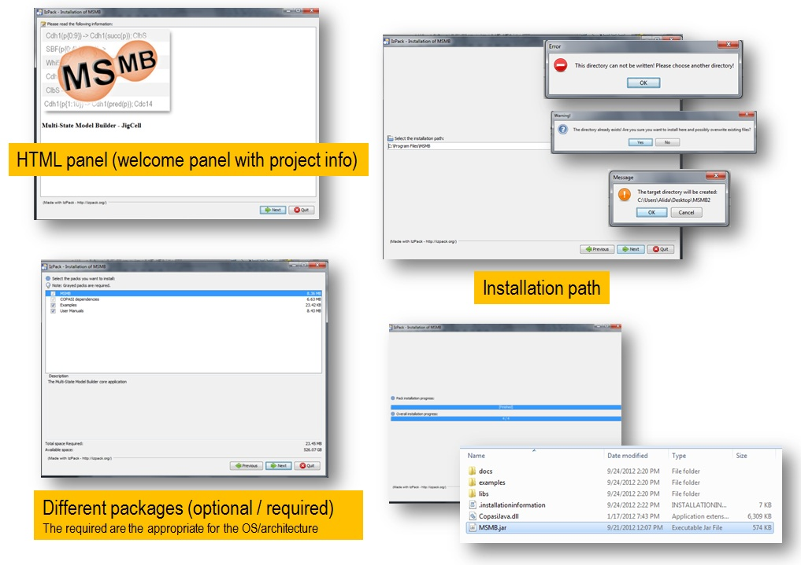

MSMB download
License
The packages available on this page are provided under the Artistic License 2.0, which is an OSI approved license.
This license allows non-commercial and commercial use free of charge.
Latest Stable Versions: 2.0 (Test release)
The latest stable version is Version 2.0 (includes Run Manager) and was released on September 5, 2014.
Installer:
multi platform installer (*) (**)
(*) Note: you need to be connected to the Internet to run the installation because the installer will automatically download the right packages for the platform you are using (Windows (32 or 64), Linux (32 or 64) or Mac OSX).
(**) Requires Java 6
You do not need administrative permission on your machine to run the installation.
Source code:
available from GitHub
If you have any trouble with the installer or compiling the source code, please send an email to alida
dotpalmisano
atvt
dotedu
(Previous version) Version 1.0, released on December 10, 2013.
Installer:
multi platform installer (*) (**)
(*) Note: you need to be connected to the Internet to run the installation because the installer will automatically download the right packages for the platform you are using (Windows (32 or 64), Linux (32 or 64) or Mac OSX).
(**) Requires Java 6
You do not need administrative permission on your machine to run the installation.
System requirements
Requirements and Installation
MSMB is implemented in Java and it is freely available for download from one of the links above.

Screenshots of the 4 simple steps of the installer wizard
The different panels shows project information, installation path, selection of the sub-packages, download and the final installation.
We provide easy installation packages for all the different architectures/OS and the source code is available on GitHub.
The compilation from source code is carried out using CMake: detailed instructions of how to produce the executable jar of MSMB can be found in the source code repository.